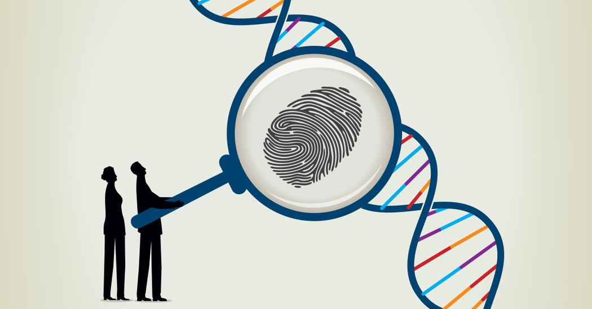

Next Episode
Late May (tentative)
Course 1: DNA
DNA, or deoxyribonucleic acid, is the hereditary material in humans and almost all other organisms. Nearly every cell in a person’s body has the same DNA. Most DNA is located in the cell nucleus (where it is called nuclear DNA), but a small
amount of DNA can also be found in the mitochondria (where it is called mitochondrial DNA or mtDNA).
